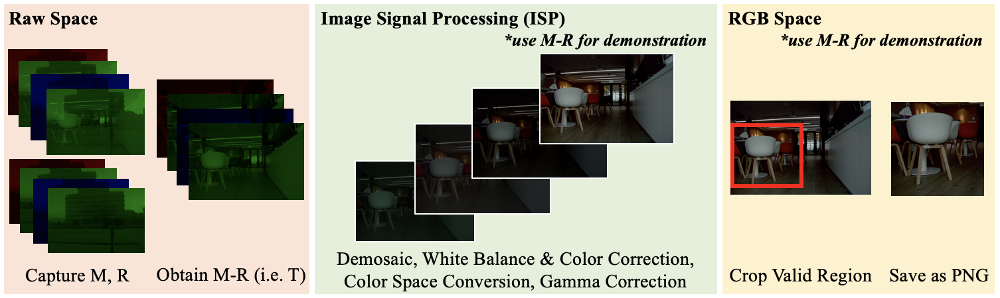

Introduction
We construct a new real-scene dataset named RSR4 that is an order of magnitude larger than existing real-world datasets for reflection removal. Our dataset consists of ground-truth reflection, transmission, and mixture images in both raw and RGB formats with diverse glass types and environments.
Dataset
| Number of Glasses | Data Format | #GenReal Data | Alignment | Dynamic Transmission | Curved Glasses | Raw Data | Training Data |
|---|---|---|---|---|---|---|---|
| >200 | M, T, R | 6000 (1600) | Perfect | Yes | Yes | Yes | Yes |
This dataset is collected mainly by three cameras: a DSLR (Digital Single-Lens Reflex) camera Canon EOS 50D, a MILC (Mirrorless Interchangeable Lens Cameras) Nikon Z6, and a smartphone camera Huawei Mate30. The total number of images in our dataset is 6,000, where 1,600 triple sets and more than 1,000 test data are provided. The resolution for each image triple-set is different. In each triple-set, we provide a mixed image M, a transmission image T, and a reflection image R. Both raw data and RGB data are provided in our dataset. We sort the images according to different criteria, including the smoothness of reflection and transmission, the relative intensity of reflection and transmission, and the ghosting effect of reflection.
Please contact leichenyang7@gmail.com if you need it now.
Advantage
- Real scenes
- Perfect alignment
- Glass diversity
- Raw data space
- Large scale
Data Collection Pipeline
We adopt the M-R pipeline proposed by Lei et al. [paper] to collect data where T is obtained by M-R.
Post-processing Pipeline
BibTeX
Please cite our work if you use data from this site.
To Be Released.